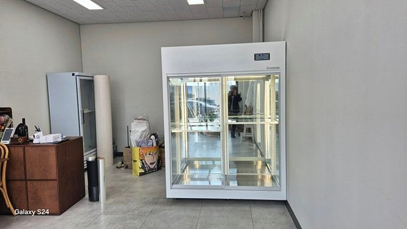
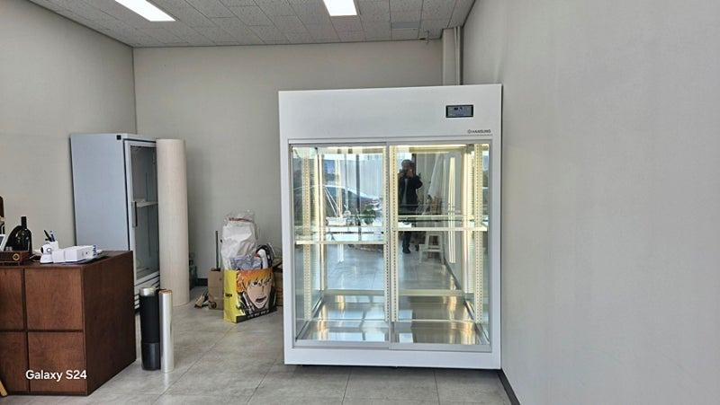
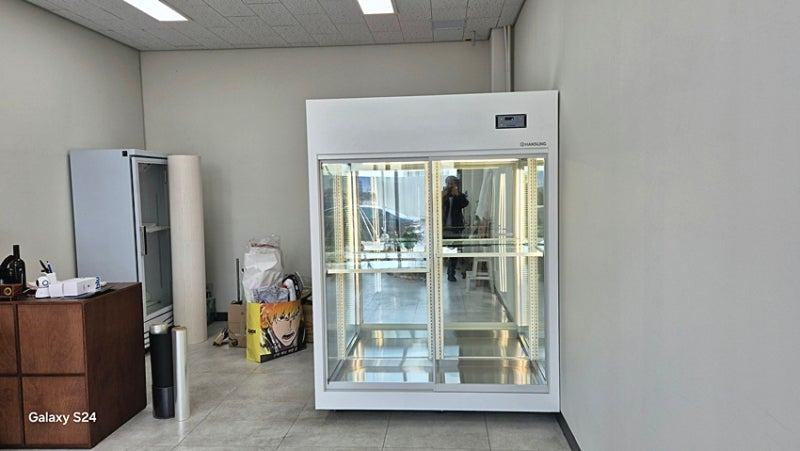
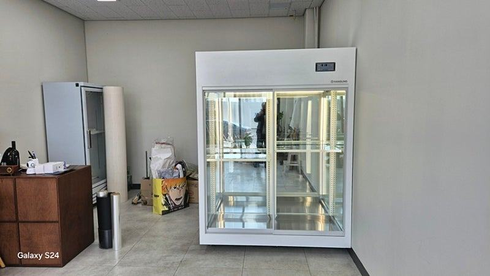

과일진열쇼케이스
과일가게 창업 준비물, 냉장 설비부터 순서대로 챙기기

과일가게 창업 준비물은 상온 진열대, 과일쇼케이스, 저장용 냉장고, 계산·포장 집기 순으로 챙기되, 들어간 뒤 바꾸기 어려운 냉장 설비 자리와 크기를 가장 먼저 정해야 합니다. 특히 과일쇼케이스는 온도만이 아니라 수분이 맞아야 무름과 변색이 줄어드니 습도 관리가 되는 구조인지 꼭 확인하세요.
안녕하세요. 과일이 제 빛깔로 보이도록 진열장을 만드는 한성쇼케이스입니다.
과일가게 창업을 앞둔 사장님들은 거래처, 간판, 포장재까지 챙길 것이 한두 가지가 아니시죠. 그러다 보니 냉장 설비는 인테리어가 다 끝난 뒤에 남은 자리에 맞춰 급하게 고르시는 경우가 많습니다.
그런데 과일가게는 냉장 진열이 매출의 얼굴입니다. 자리가 맞지 않는 기성품을 들이면 통로가 좁아지고, 습도가 맞지 않으면 진열한 과일이 하루 이틀 만에 물러 손실로 이어집니다.
오늘은 과일가게 창업 준비물을 설비 중심으로 순서대로 정리하고, 각각 무엇을 확인해야 하는지 알려 드리겠습니다.
1. 준비 순서: 냉장 설비 자리부터
과일가게는 매장 전면이 상온 진열대, 안쪽이나 한쪽 벽이 냉장 진열이 되는 구성이 많습니다. 쇼케이스는 전기 용량과 배수, 실외기 위치까지 영향을 주기 때문에 인테리어 공사 전에 자리와 크기를 먼저 정해 두셔야 공사를 두 번 하지 않습니다.
도면이 나오면 쇼케이스가 놓일 벽의 폭, 천장 높이, 콘센트 위치를 표시해 두세요. 이 치수가 있어야 제작사에서 들어갈 수 있는 구성을 정확히 제안할 수 있습니다.
- 쇼케이스 놓을 벽의 폭과 높이 실측
- 전기 용량과 콘센트 위치 확인
- 실외기를 둘 자리와 배수 경로 확인
2. 과일쇼케이스: 온도보다 수분
과일은 수확한 뒤에도 호흡을 하기 때문에 같은 온도에서도 수분 환경에 따라 상태가 달라집니다. 습기가 너무 많으면 표면에 물기가 맺혀 조직이 물러지고, 너무 건조하면 수분이 빠져 윤기가 사라지고 쭈글쭈글해집니다.
그래서 과일쇼케이스를 고를 때는 설정 온도만 보지 말고, 냉기가 과일에 직접 닿지 않는 구조인지, 내부 습도를 안정적으로 유지할 수 있는지를 함께 물어보셔야 합니다.
딸기·체리처럼 무르기 쉬운 과일과 사과처럼 단단한 과일을 같은 칸에 두지 않도록 칸 구성도 미리 정해 두세요.
조명도 준비물에서 빠뜨리기 쉬운 부분입니다. 과일 색이 실제보다 탁해 보이면 손님은 신선도를 의심하니, 과일 색을 살리는 조명 색을 맞춰 두시면 좋습니다.


3. 저장 냉장고와 상온 진열대
진열용 쇼케이스와 별도로 박스째 들어온 과일을 보관할 저장 냉장고가 필요합니다. 진열 칸에 재고까지 쌓으면 냉기 순환이 막혀 온도가 고르지 않게 되니까요.
입고 물량이 많다면 문이 넓은 업소용 냉장고나 작은 저온 창고를 검토해 보세요.
상온 진열대는 바나나, 감귤, 수박처럼 냉장이 필요 없는 품목을 위한 자리입니다. 손님이 들어오며 처음 보는 곳이라 높이와 기울기를 정해 색감이 잘 보이게 쌓는 것이 좋습니다.
- 진열용과 저장용 냉장 설비를 따로 준비
- 상온 품목과 냉장 품목 목록 미리 나누기
4. 계산·포장대와 나머지 집기
저울, 포장대, 선물 세트 포장 공간은 쇼케이스 바로 옆에 두어야 동선이 짧아집니다. 쇼케이스에서 꺼낸 과일을 바로 무게 재고 포장할 수 있게 배치해 보세요.
그 밖에 바구니, 가격표 꽂이, 손님용 장바구니, 과일 손질용 작업대도 오픈 전에 챙겨 두시면 첫 주 운영이 훨씬 수월합니다.
체크리스트
- 냉장 설비 자리와 실측 치수
- 과일쇼케이스 습도 관리 구조
- 과일 색을 살리는 조명
- 재고용 저장 냉장고
- 쇼케이스 옆 저울·포장대 동선
- 가까운 A/S 접수처
현장에서 자주 보는 경우: 기성품이 매장 크기와 맞지 않을 때
과일 종류가 늘면서 과일쇼케이스 제작 문의도 많아졌는데, 상담을 하다 보면 매장 크기와 형태를 따지지 않고 기성품을 먼저 들였다가 진열 자리가 애매해진 경우를 자주 봅니다.
진열이 답답하면 과일이 신선하고 달아 보이는 효과도 줄어듭니다.
이런 매장은 유리 접합 방식, 냉장 기능, 조명까지 매장에 맞춰 다시 구성하는 방향으로 상담을 진행합니다.
제조부터 판매까지 한 경로로 이어지는 구조라 맞춤 제작도 부담을 줄일 수 있고, 직영 공장을 통해 고장 대응까지 이어서 맡을 수 있습니다.





자주 묻는 질문
과일쇼케이스 적정 온도는 몇 도로 맞추면 되나요?
과일 종류와 숙성 정도에 따라 다르기 때문에 한 가지 숫자로 정하기 어렵습니다. 무르기 쉬운 과일과 단단한 과일을 칸으로 나누고, 온도와 함께 표면에 물기가 맺히는지 매일 살펴보세요.
작은 매장이라 쇼케이스와 저장 냉장고를 다 둘 공간이 없어요.
진열 칸 아래에 저장 공간을 둔 구성이나, 벽 폭에 맞춘 슬림한 쇼케이스로 공간을 나누는 방법이 있습니다.
매장 도면을 보내 주시면 들어갈 수 있는 조합을 먼저 안내해 드립니다.
개업 날짜가 정해져 있는데 언제쯤 주문해야 하나요?
맞춤 제작은 실측과 디자인 확정 후 제작이 시작되므로 인테리어 공사 일정이 나오는 대로 상담을 시작하시는 게 좋습니다.
정확한 기간은 구성과 물량에 따라 달라 상담 때 안내해 드립니다.
매장 조건에 맞춰 만드는 한성쇼케이스
원하시는 제품 사진과 설치할 공간 사진만 보내 주셔도 매장에 맞는 구성을 추천해 드립니다.
- 전국 240여 개 A/S 전담 센터 운영
- 본사 대량 자재 매입으로 품질 대비 합리적인 가격
- 유럽제·삼성 냉각 콤프레셔 적용
- 국내 최초 쇼케이스 전문 디자이너 상주
매장 폭과 원하는 진열 구성을 알려 주세요. 실측과 견적을 안내해 드립니다.
031-986-2458